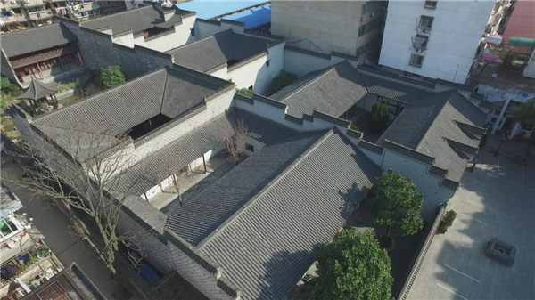
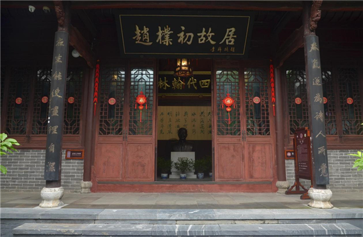
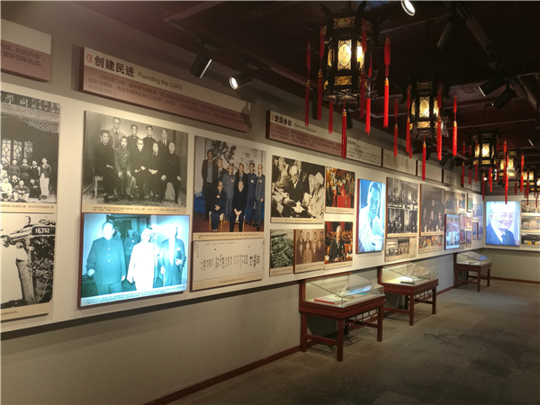

安庆市赵朴初故居陈列馆俯瞰图

安庆市赵朴初故居陈列馆

安庆市赵朴初故居陈列馆布展一角
世太史第（赵朴初故居）坐落于安庆市迎江区天台里街9号。全国重点文物保护单位、国家级AAA旅游景区、安徽省爱国主义教育示范基地、安徽省统一战线教育基地。
2001年始，安庆市人民政府多方筹资1300余万元修复故居，于2003年11月1日修复竣工对外免费开放。修复后的世太史第分东西两条轴线，东轴线四进，西轴线三进，共七进五院落，占地面积4463平方米，建筑面积2773平方米。主体建筑坐北朝南，砖木结构，外墙为青砖勾缝清水墙，古朴典雅。整个古建筑群融北方古建的恢宏、粗犷及徽州古建的细腻、精致于一体，有着浓郁的地方特色和历史、科学、艺术价值，是我省保存较好、面积较大的一组明清古建筑群。
赵朴初故居是赵朴初先生和赵氏家族文物藏品的保管、研究和展示中心常年陈列《赵朴初瞻仰厅》《赵朴初生平展》《赵朴初出生地》《安徽统一战线教育展——统一战线上的楷模赵朴初先生》《赵朴初故居馆藏书画名家精品展》等固定陈列，每年举办书画临展6次，年接待观众13万余人次。